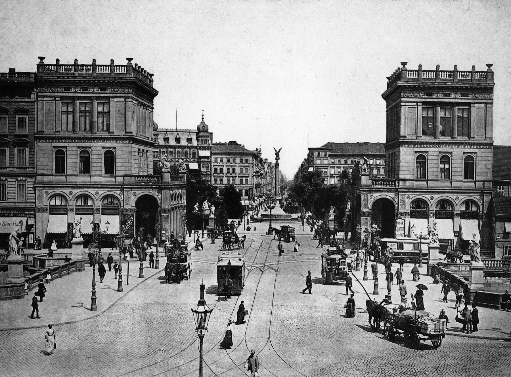
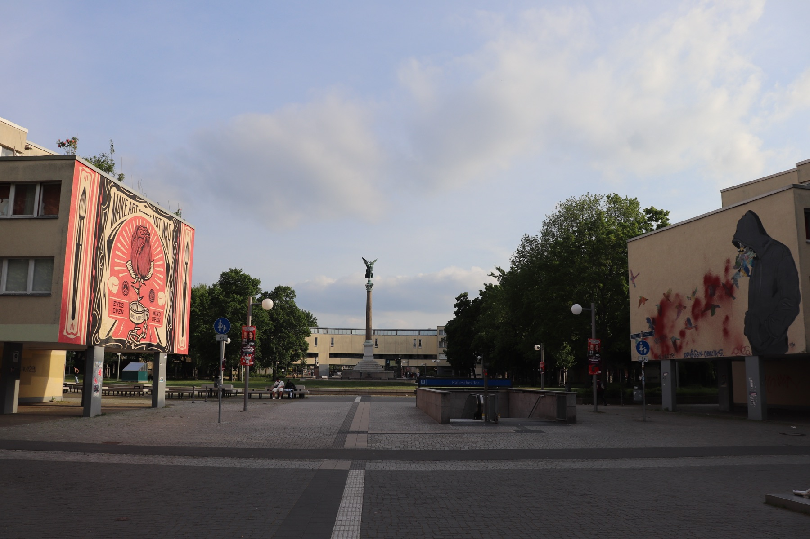

Viewpoint: looking north through Hallesches Tor. Do not align the gatehouses with the current photograph.
MEHRINGPLATZ · 1894–2024
Choose a year, then compare its evidence with another layer. The photographs were made from different positions and with different lenses.

Viewpoint: looking north through Hallesches Tor. Do not align the gatehouses with the current photograph.
The viewer prevents identical year pairs.

Viewpoint: from the southern side of the pedestrian square, looking north. The old gatehouses are gone.
WHAT TO COMPARE
The winged figure marks the centre across the oldest and newest views.
The monumental southern entrance frames 1894 but does not return after the war.
The postwar inner ring preserves a circle while making the public space smaller.
SOURCE RECORD
Images are shown as historical evidence. No reconstruction or same-angle overlay has been created.